注意：以下的内容均为个人观点+在学习/实践中得出。
如果你看完后有不同的观点也没关系！请指出，我很乐意去尝试积极的东西。
封面：

1. introduction
在日常 gdb 调试、解 coredump 的时候，我们基本都会使用到这个命令：bt/backtrace，会被告诉说这个命令使用来看栈回溯的，看调用链就行，但是结合我的之前的实习经验来看，如果出现了以下这种情况[1]：
(gdb) bt
#0 0xb38e32c4 in pthread_getname_np () from /home/enrique/buildroot/output5/staging/lib/libpthread.so.0
#1 0xb38e103c in __lll_timedlock_wait () from /home/enrique/buildroot/output5/staging/lib/libpthread.so.0
Backtrace stopped: previous frame identical to this frame (corrupt stack?)
如果不明白内部以及一些 ELF 的基础知识，往往会抓瞎，甚至得出错误的 debug 结论。
比如我实习的时候就遇到了和上面一样的 corrupt stack，甚至在周会汇报上（还没和 mentor 交流...），脑子一热（其实自己当时也不确定，有侥幸心理的）直接就说出了 stack 坏了的结论，直接就被大佬怼了。
而会后了解相关的背景知识后，才发现自己真的是 too young too simple，这也是准备写这几篇文章的缘由。
那个时候也可以说是第一次明白新手和真正的工程师的差距，在没有是实习之前，我想的一直都是说，反正平时我自己也写了一些东西了，
bug也调一堆，实习进去总不会这么菜吧。确实。进去之后发现和一般的实习生/同事相比其实水平都差不多，甚至犹有过之，但是和真正优秀的工程师差距其实还是肉眼可见的。
其中最让我明白差距的就是：大家不会轻易对一个问题下结论，因为整个系统过于复杂，没有人能搞明白所有的东西，大家都是根据观察到的现象进一步去推导可能的事实，然后再证明或证伪。
扯远了，只是有所感悟罢了。
回到这里 gdb 的 backtrace 的问题，鉴于上面的经历，所以我打算写一个小的系列笔记，写自己觉得需要补充的：ELF 符号表、调试信息、gdb 内部的实现 backtrace、arm64 的调用内容等等内容，大概就三、四篇。
本文主要讲的是自己理解的程序执行/函数调用的本质、以及部分的 Procedure Call Standard for Arm Architecture (AAPCS)，最后会给出一个小 demo 关于 dump 的。
2. 状态机
2.1 程序执行
按照 first principle，先忘记 gdb，站在 CPU 侧，理解函数调用的本质。
CPU 只会执行我们安排好给它的指令，不管是在写什么语言的应用程序，还是像 Android、os 等比较 low-level 的代码，本质就是二进制的东西：01010111000....
而且，如果把现代计算机的结构剥离到只剩最核心的部件，基本就只剩下这几样：
- 存储器 (Memory)：装指令和数据的地方（存状态）
- 寄存器 (Registers)：CPU 内部极快、极小的暂存空间（不断和存储器做数据交换太耗时）
- 程序计数器 (PC)：永远指向下一条要执行的指令
注意：从计算理论来看，寄存器并不是必须的：因为只要有办法保存当前的状态，那理论程序上就能够无限运行下去。
上面概念的本质就是我们熟悉的
Turing Machine（它的“状态”是通过读写无限长的纸带并改变内部状态来管理的）[2]。
计算机唯一会做的就是这个死循环：
while (1) {
从 PC 指示的内存地址取出指令;
执行指令 (顺便算算加减法、挪挪寄存器里的值);
更新 PC;
}
如果学过一些数字逻辑电路，那你就能明白一个非常重要点：计算机是一个状态机[3]：
既然计算机是一个数组逻辑电路, 那么我们可以把计算机划分成两部分, 一部分由所有时序逻辑部件(存储器, 计数器, 寄存器)构成, 另一部分则是剩余的组合逻辑部件(如加法器等).
这样以后, 我们就可以从状态机模型的视角来理解计算机的工作过程了: 在每个时钟周期到来的时候, 计算机根据当前时序逻辑部件的状态, 在组合逻辑部件的作用下, 计算出并转移到下一时钟周期的新状态.
计算机的这个视角有什么用呢? 好像除了让你明白计算机硬件不再那么神秘之外, 也没什么特别的用处. 毕竟ICS课不要求大家用硬件描述语言来实现计算机硬件, 大家只要相信这件事能做成就可以了.
不过对于程序来说, 这个视角的作用会超乎你的想象.
有兴趣的可以去做 NJU 的计算机系统基础实验[3]，就这么说吧，只要你能认真地独立完成这个实验，你就会有勇气面对所有的 bug。但这不是我们的重点。
既然计算机是一个状态机，那么运行在计算机上面的程序又是什么呢？可以想当然的回答，程序也是状态机。
但如果程序是状态机，那他的初始状态是什么？
很直白的，前文就说了，存储器/寄存器中存储着程序当前的状态，那状态如何迁移？
那状态迁移又是怎么做的？就是经过某种操作改变了状态，改变了存储器中的状态，仔细想想想，计算机指令似乎干的就是这事！指令就是输入，每执行一条指令，CPU 的寄存器和内存状态就发生一次确定的转移！合理
看看下图[2]：
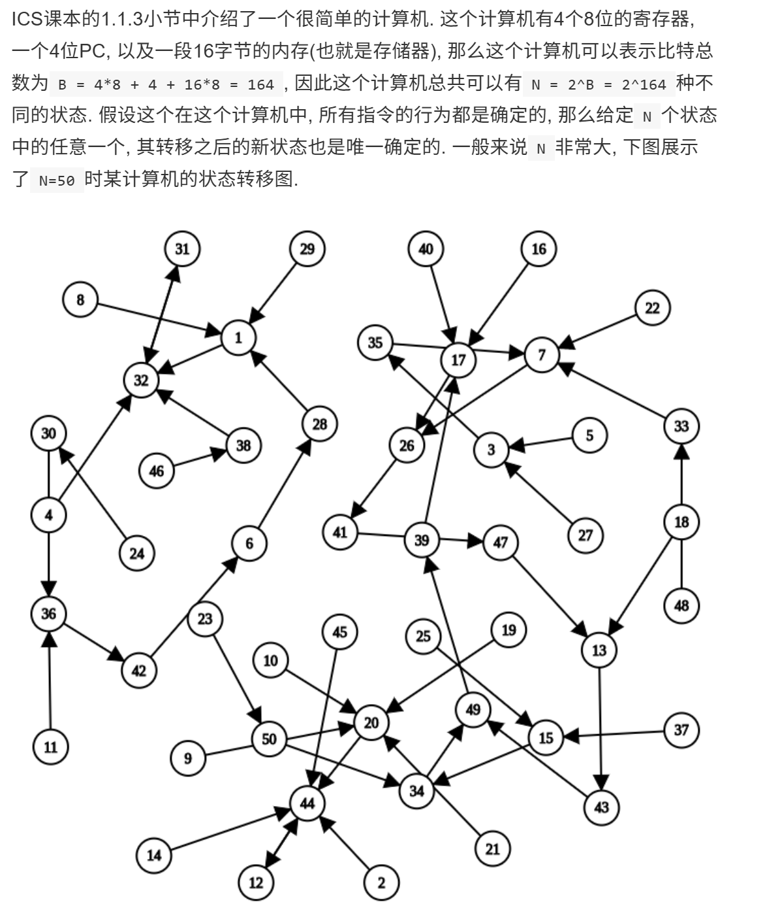
可以得出推论，程序也可以看成一个状态机，非常推荐去看 [2] 中关于程序是状态机的部分，写的很好！
2.2. 函数调用
既然程序是一个随着指令流不断变化的状态机，那我们写的代码的函数调用是个啥？
如果代码只是一条直线，PC 无脑 +1 往下跑不就行了，显然不对，进入到别的函数后，你还得回来，所以进一步理解，函数调用的本质：
“离开当前状态，去执行一段子状态（机），最后还要能准确无误地回到离开时的位置”
很自然，怎么记住离开地址/返回地址？直接存起来就行，存储器嘛。（自然就会带来相比寄存器，内存太慢了的问题）
接着就到了很多文档资料都能搜到的内容了，挺无聊的，AI 总结：
函数调用有一个天然的特性：后进先出（LIFO）。
A 调 B，B 调 C，最后一定是 C 先返回，再 B 返回。这完美契合了栈（Stack）这种数据结构。
于是，栈指针（Stack Pointer, 简称 SP）诞生了。 在早期的 x86 等架构中，栈和 SP 几乎包揽了所有脏活累活：
- 调用函数？把返回地址
push进栈（SP 减小）。- 传参数？把参数
push进栈。- 存局部变量？把 SP 往下挪，腾出空间。
而上面这种多层函数调用（也就是嵌套），也会被叫为 call stack 了。
进一步，每个函数调用在 stack 上占据一块区域，称为各自的 stack frame 。
而且，为了区分不同的帧（避免搞混，比如同一个函数被递归调用多次），GDB 给每个帧一个帧 ID（具体怎么分，会在第三篇的时候写）
但上面的内容和现代的 CPU 还有点差距，最大的原因：内存相比寄存器太慢了点，快快快，还要在快。
也就进一步实现：LR(link register) 和 FP(frame pointer)。
2.2.1 LR 寄存器
LR 寄存器没什么好说的，直接看文档[4]：
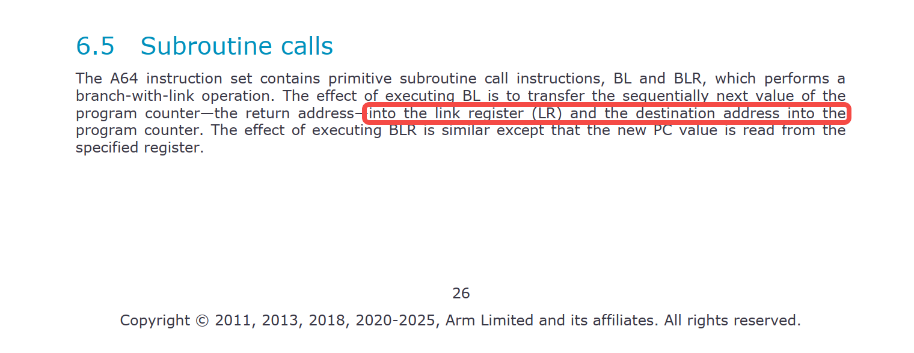
当发生函数跳转（执行 bl 指令）时，不再主动去压栈，而是直接把返回地址塞进一个专属的高速寄存器中——链接寄存器（Link Register, 简称 LR，也就是 x30）。
我们直接把返回地址放到 LR 中后，访问速度确实快了，但是还有一个问题，想象这么一串函数调用：A() → B() → C()
能很简单地就想到新的调用 B()/C() 的 bl 指令会无情地覆盖掉 x30 里 A()/B() 的返回地址，所以设计者们还使用到了栈：B() 在准备调用 C() 之前，把旧的 x30 保存到内存（栈）里。
2.2.2 FP寄存器
但是 fp(frame pointer) 很有意思。
历史上解决这个问题的背景是这样的：
在一个函数内部，只要你申请一个局部变量，或者动态分配一点内存，SP 就会上下乱窜。
如果在调试或者发生 Coredump 时，想通过 SP 往回推导调用链，你会发现根本找不到规律——因为你不知道上一个函数的返回地址到底被埋在了 SP 偏移多少的位置。
所以为了解决前面提到的“SP 上下乱窜找不到北”的问题，AAPCS64 引入了 FP 的设计——栈帧指针（Frame Pointer, 简称 FP，也就是 x29）。
无论 SP 在函数执行时怎么跳动，FP 一直都指向当前执行函数的 stack frame 的起始位置（栈底），或或者按照手册[4]：比较不那么直白的定义：
The frame record for the innermost frame (belonging to the most recent routine invocation) shall be pointed to by the frame pointer register (FP).
最里面的帧（属于最近的函数调用）的帧记录应由帧指针寄存器（FP）指向。
再来看看官方文档[4]：
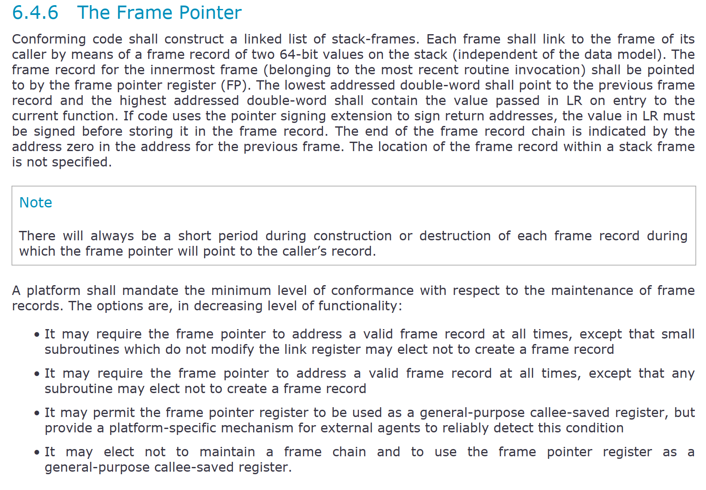
文档要求对于 arm64 的函数调用，需要构建一个 linked list of stack-frames。
意思就是构建一个由 stack frame 作为节点的物理链条/表，其中每一个 frame 节点由两个双字，也就是两个 64-bits 组成（就是FP 寄存器 + LR 寄存器啦）。
但是具体怎么串起来的？这个链表的 next/prev 节点是啥？
别忘了，FP 存的就是上一个 stack frame 的其实位置呀。自然就能串起来了。
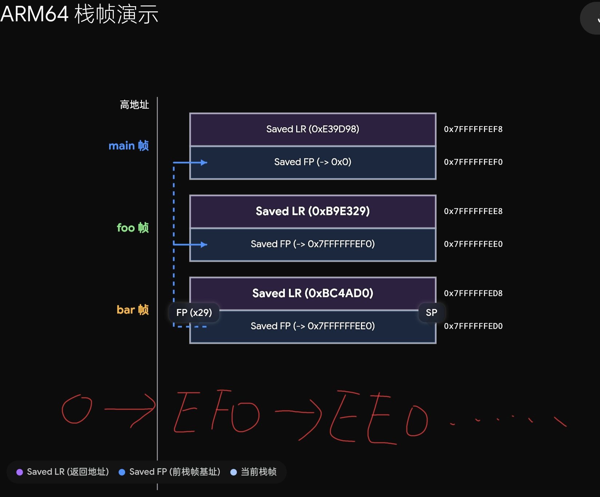
注意起始 FP 是0：
The end of the frame record chain is indicated by the address zero in the address for the previous frame.
还有一点，关于 LR 和 FP 的位置，手册明确指明：
The lowest addressed double-word shall point to the previous frame record and the highest addressed double-word shall contain the value passed in LR on entry to the current function.
也就是 LR 寄存器存放在地址空间的高位，FP则放在地址空间的地位。
再结合手册的 full-descending 栈（向低地址方向生长，同时 SP 指向最后一个压入 stack 的数据，不是下一个空闲位置）：[limit, base)
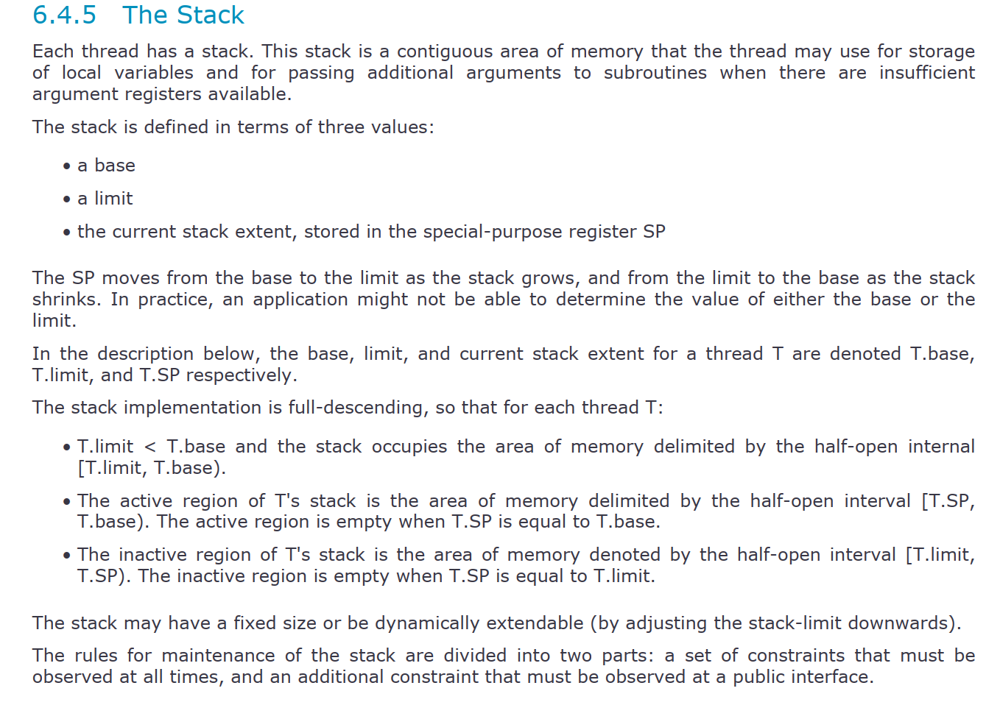
也就是我上一张图片画的那样的位置了，或者如下文字图：
高地址 (High Address)
| ... 上个栈帧的局部变量 ...|
+---------------------------+
Old FP 指向 -> | ... 上个栈帧的基址 ... |
+===========================+ <--- 当前栈帧的 FP (x29) 指向这里 (栈帧底 / 高地址)
| 保存的 LR (x30, 返回地址) |
+---------------------------+ <--- FP + 8
| 保存的 Old FP (上一个x29) |
+---------------------------+
| 当前函数的局部变量 |
| 寄存器保护区等 |
| ... |
+===========================+ <--- 当前的 SP 指向这里 (栈顶 / 低地址)
低地址 (Low Address)
这也可以看出，如果要做 stack backtrace（调试分析 coredump 或 Oops 信息）时，调试器只需要拿到当前的 FP：
-
读
*FP就能跳回上一层函数的栈底。 -
读
*(FP + 8)就能知道上一层函数是在哪里调用的。如此循环，就能完整地把整个函数调用链（Call Stack）从低地址（深层调用）向高地址（浅层调用）串联并还原出来。
其实在写到这里，大致有点没眉头了，在我实习之前了解到的程序也就到这里为止了。
如果看过一些
arm64的函数调用的开头代码：stp x29, x30, [sp, #-16]! // 把旧的 FP 和 LR 压入栈中，同时 SP 下移 16 字节 mov x29, sp // 让当前的 FP 指向新的栈顶这两步做的基本就是构建当前函数
stack frame了。
总结一下：
理解了前面说的，看明白了基于 fp 构建的 linked list of stack frame，大概就也能才到一点 arm64 的 backtrace 的实现了！
回想一下，这是不是就是 2.1 说到的，程序是个状态机的实际体现？stack frame 中存储好了状态，每次一次函数调用是不是就切换状态，甚至说是切换到子状态机！
而 backtrace 是不是就是根据 memory 和 寄存器（stack frame 和 FP 寄存器）去”猜“出当初那个状态机是怎么走过来的？
再回到第一章说的：
(gdb) bt
#0 0xb38e32c4 in pthread_getname_np () from /home/enrique/buildroot/output5/staging/lib/libpthread.so.0
#1 0xb38e103c in __lll_timedlock_wait () from /home/enrique/buildroot/output5/staging/lib/libpthread.so.0
Backtrace stopped: previous frame identical to this frame (corrupt stack?)
是不是只要一旦内存状态不符合 GDB 的预设规则，backtrace 就罢工了，丢给你一句 corrupt stack? 啦？好像什么都串起来了？
3. 拓展
在这一篇：你的技术想象力，受限于你的信息边界 中，写道：
“（我觉得）在这个时代的下，你们最需要的就是有一个清晰的概念什么事情是能办到的，因为人没有办法做自己想象不到的东西，而扩展你的想象力的方式就是去看别人想到了什么。“
所以，在今后的文章中，考虑篇幅合适的情况下，我都会用以上类似的 prompt + 本文前面几章的总结 + ARM 官方手册，去和 AI 聊，让 AI 帮我看看有什么冷门但重要的东西值得去看看的！
下面写我觉得有意思的
3.1 指针签名（Pointer Signing）—— 防 ROP 攻击
在 AAPCS64 手册里有这么一句话：pointer signing extension
If code uses the pointer signing extension to sign return addresses, the value in LR must be signed before storing it in the frame record.
如果代码使用指针签名扩展对返回地址进行签名，则必须先对LR中的值进行签名，然后再将其存储到帧记录中
按照之前的理解，FP 指向上一帧，[FP] 存上一帧的 FP，[FP+8] 存返回地址 LR。
也就是：LR = Return Address
但是现在的工程现实变成了：LR = Return Address + Signature
原因在于 ARMv8.3-A 引入了指针认证（PAuth），返回地址被加密签名。保存在栈帧里的 LR 必须是已签名的版本，返回时再验证。
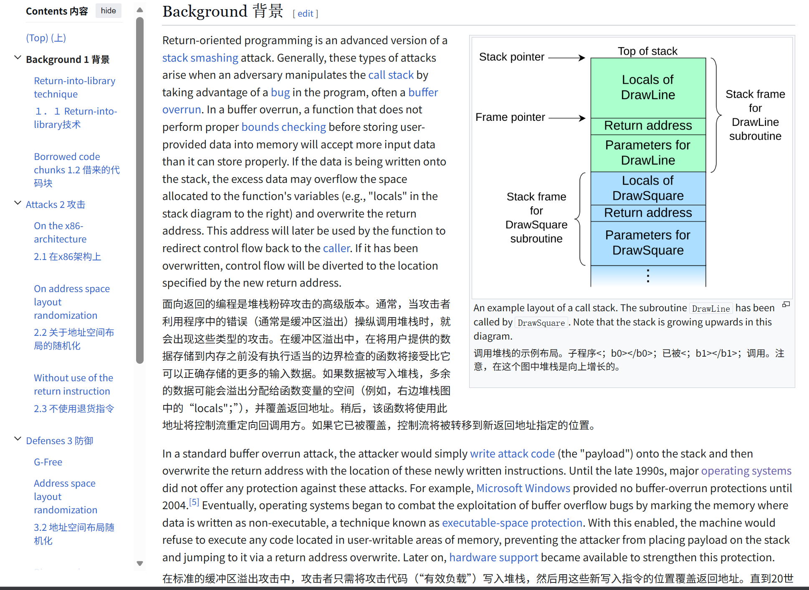
没理解这一点的话，理解就会停留在“裸地址”。
这部分我直接展示实践例子结果，完整代码参考：https://github.com/JAILuo/wechat-demos
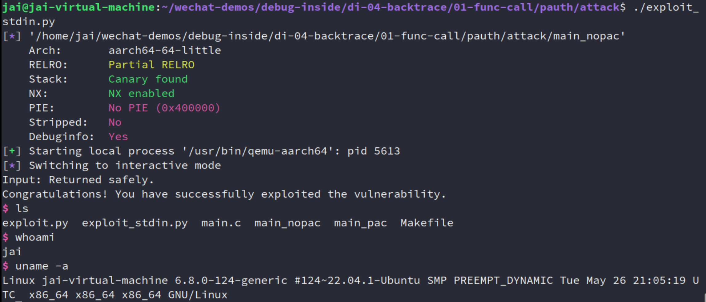
可以看到如果是执行 main_nopac，我们确实直接劫持了控制流，执行了我们代码中特定插入的 system(/bin/sh)，
如果是执行 main_pac，直接崩溃：
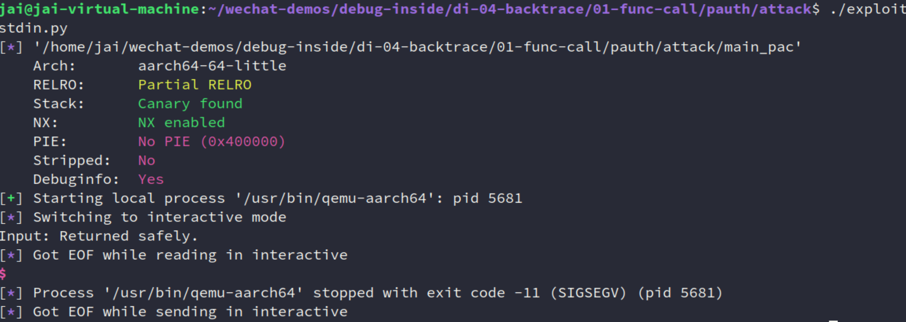
尽管上述内容获得的运行权限只是一个普通用户（如果是内核态搞出了这个，那就可以执行任意内核代码了），但有学习意义的，对于我们做 BSP 的人来说，可以参考知道有这个问题。
而且，回到我这系列的主题 backtrace，如果你直接在 gdb 中输入 bt，因为是比较老的调试器，所以非常有可能找不到符号，或者 bt 挂掉：
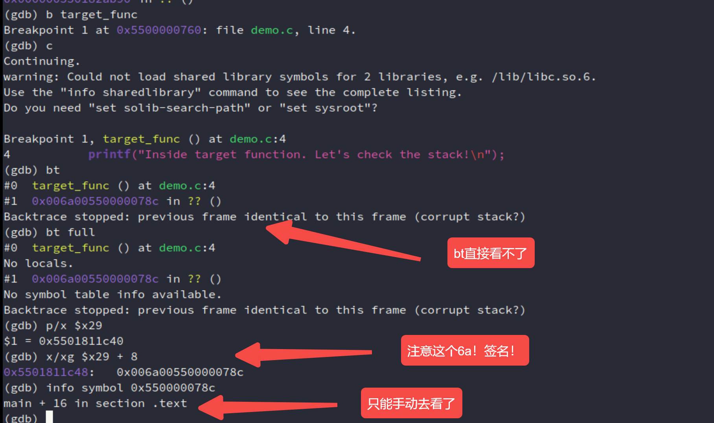
当然这个时候，还是有一些解决办法的：
- 手动看这个地址，人肉去除签名，像上面一样
- 升级 GDB 工具？我没试过（因为我这里已经是 GDB 12.1了，但仍有问题）
- python脚本辅助自动化吧，写一个 Frame Filter 或 Unwinder 脚本，GDB 读
[FP + 8]的时候，拦截这个动作，做：new_pc = raw_pc & 0x0000FFFFFFFFFFFF
考虑到篇幅就不再说了。
如果对安全感兴趣的，推荐阅读以下文档：
- Code reuse attacks: the compiler story：https://developer.arm.com/community/arm-community-blogs/b/tools-software-ides-blog/posts/code-reuse-attacks-the-compiler-story
- Pointer Authentication on Arm | Arm Learning Paths：https://learn.arm.com/learning-paths/servers-and-cloud-computing/pac/pac/
- Ret2win - arm64 - HackTricks：https://hacktricks.alquymia.com.br/binary-exploitation/stack-overflow/ret2win/ret2win-arm64.html#finding-the-offset
实际上，AI 还给了另外一点东西：
如果想更深入、更确信 ROP 的防御原理，可以借 Linux Kernel LKDTM（Linux Kernel Dynamic Memory Testing Module，内核动态内存测试模块）这个现成的基础设施来展示破坏 PAC 的后果。
LKDTM 是内核专门用于测试安全特性的模块。它包含一个叫
CORRUPT_PAC的测试点，在内核启用了CONFIG_ARM64_PTR_AUTH（指针认证内核配置）的情况下，主动将当前函数返回地址的 PAC 签名擦除（直接把 LR 高位清 0，破坏完整性），然后让它返回，触发内核 abort。这是 验证 PAC 有效性的最直接方法。
想深入就再问问 AI 吧！
3.2 其他
其他的内容我觉得也挺有意思，但是我不展开写了，不是重点。
-
LR 本质是返回地址 Cache（容量只有8byte的，专门针对返回地址的）
比如A → B → C：
如果状态B不再调用其他函数，这个Cache就“命中”了。函数执行完直接
RET（把LR的值塞回PC），全程零内存交互，极大地加速了状态恢复。如果状态B还要调用状态C，新的返回地址会覆盖LR。这时就发生了“Cache驱逐（Eviction）”——旧的LR值必须被压入栈（内存）中保存。
-
Tail Call 会让调用栈消失
-
不是所有平台都展开FP
A platform shall mandate the minimum level of conformance … It may permit the frame pointer register to be used as a general-purpose callee-saved register … It may elect not to maintain a frame chain …
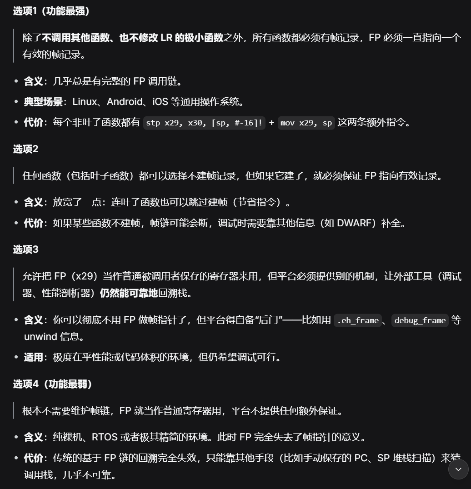
-
引入 动态链接、PLT、GOT的
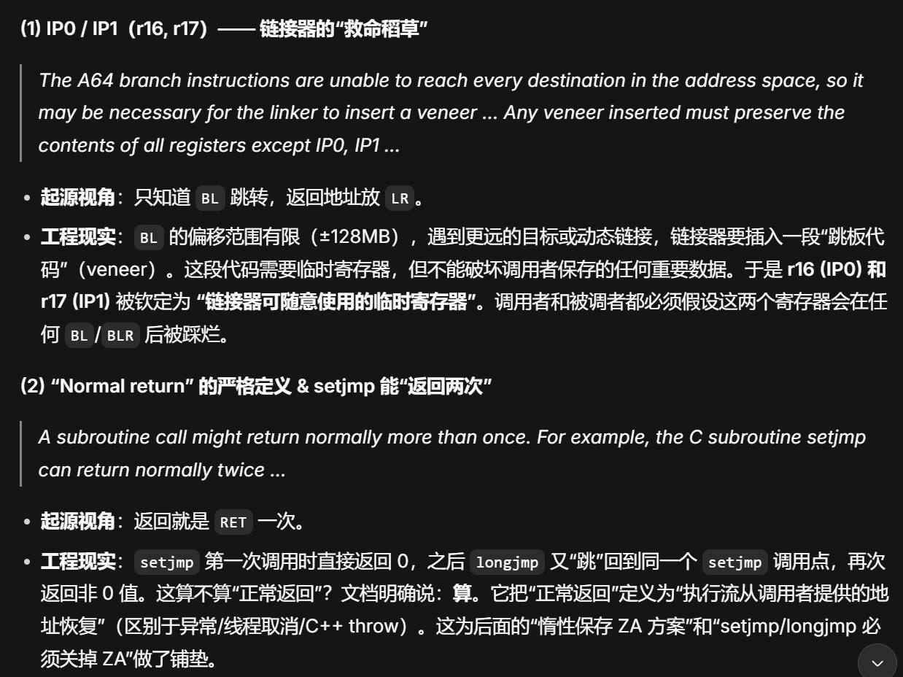
......
很多。
4. 深入理解
最后这里讲讲”程序是个状态机“这一推论自己的理解。
-
既然每一个程序都是状态机，都是从某个初始状态经过各种状态迁移变成了如今程序的样子，那在我调试的时候一样可以用这个理论！
所谓 bug，那就是原本程序有一个正常/正确的执行流（状态机），而因为某种不知名的原因，导致程序做了一步偏离我本意的状态迁移，从而导致 bug 的产生。
这个理论，也是我一直以来调试程序的总结出来的自己的方法，尽管是一个理论上/比较抽象的总结，但我也因此解决了很多问题！
我在这篇文章中也写了：自用的问题调试排查
-
第二个则是和本系列的
backtrace或许更加相关只要有 memory 和 regs，就能完整地保存一个程序在某个时刻的状态！各种 dump（
coredump、ramdump...）就是给这个状态机拍照！
重点是第二个观点。
可能有人好奇为什么叫
dump：
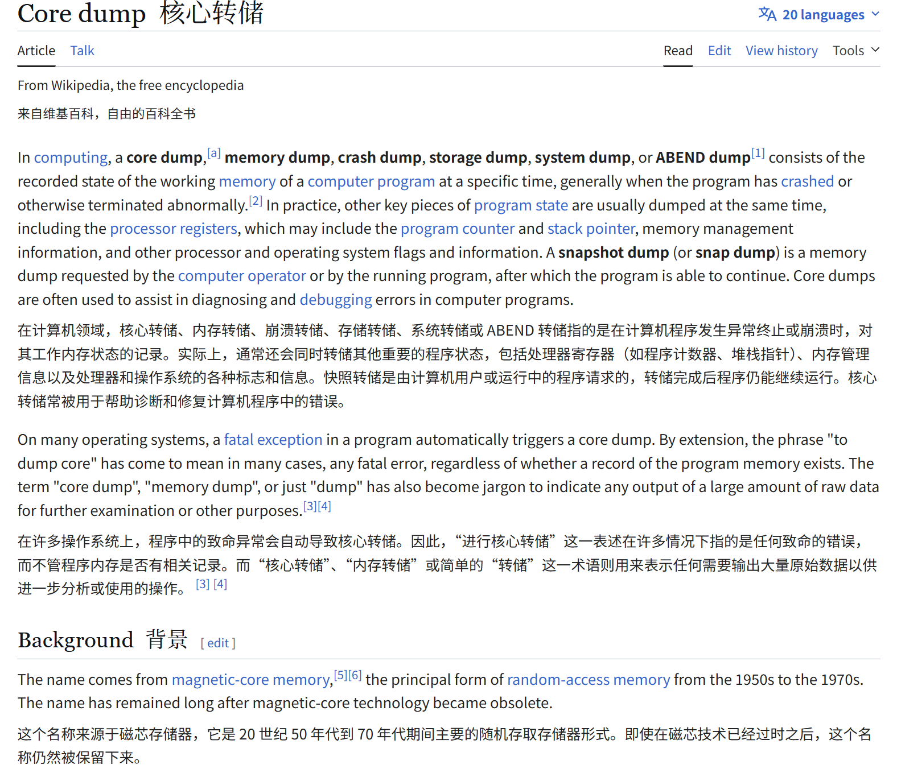
计算机发展的早期（1960-70年代），主流存储器是磁芯存储器（Magnetic Core Memory）。它由无数个微小的磁性圆环（磁芯）组成，每个磁芯能存储一个比特（0/1）。
所以，当时的程序员和工程师就直接用
Core来指代计算机的内存。因此，当程序崩溃时把内存内容保存下来，就自然叫做
Core Dump。
Dump原意是“倾倒”、“倒垃圾”。在计算机领域，
- 粗暴、不加区分：Dump 就是把内存里的所有原始数据（二进制 0 和 1）一股脑地倾倒出来，就像一个卡车把整车垃圾直接卸在地上。它不关心哪些数据有用、哪些没用，也不会重新整理或翻译。
- 原始、未经处理：这个文件是内存的“快照”，是纯粹的原始副本，不是格式化的报告。
我让 AI 做了以下的内容：
用一个很小的、可运行的 Python 项目，手工实现一个“微型状态机 + dump/restore”的 demo，来印证这个理论：
-
一个运行中的程序 = 内存数据 + 寄存器 + 程序计数器 (PC)
-
只要把这些值完整保存下来，就能在之后 完全恢复 并继续执行。
-
模拟一个极简的 CPU（只有 3 个寄存器、256 字节内存），执行几条指令。
然后在某个时刻 dump 到 JSON 文件，之后 load 回来继续跑，状态完全一致。
直接看结果（代码依然在：https://github.com/JAILuo/wechat-demos）：
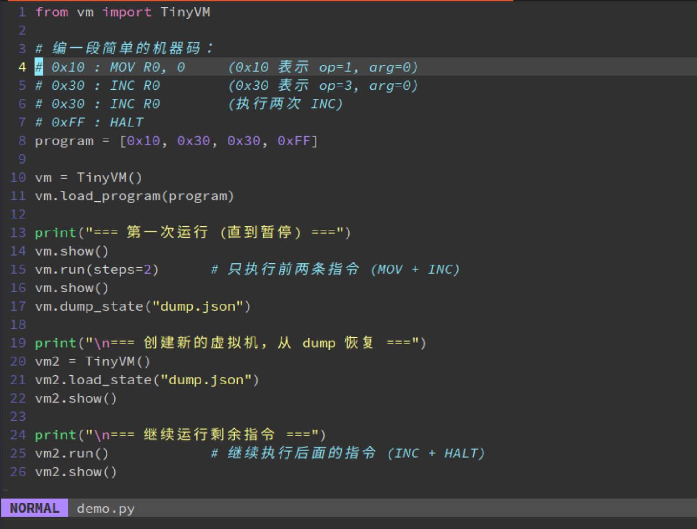
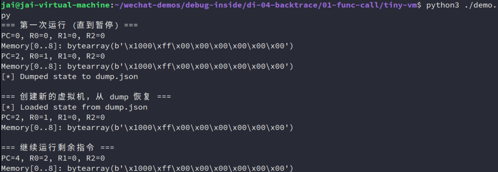
可以想象，基于这个想法，memory + regs，再加上各 ISA 的通用寄存器，特殊状态寄存器：mcause、cr3、CPSR、PSTATE(抽象概念)、SPSR_ELx、ELR_ELx等等，程序的行为是不是就能被复原出来！coredump 的基础不就是这样吗？！
所以，本文写了一些很基础的东西，但是很多的工具、基础设施都是建立在这之上的呀！
至此，本文已完成，下一篇讲述符号表、调试信息等 ELF 相关的东西。
参考
[1] Figuring out corrupt stacktraces on ARM：https://eocanha.org/blog/2020/10/16/figuring-out-corrupt-stacktraces-on-arm/
[2] Universal Turing machine - Wikipedia：https://en.wikipedia.org/wiki/Universal_Turing_machine#cite_note-FOOTNOTEDavis2000193_quoting_''Time''_magazine_of_29_March_1999-5
[3] NJU ICS PA：https://nju-projectn.github.io/ics-pa-gitbook/ics2025/1.2.html
[4] AAPCS64 文档